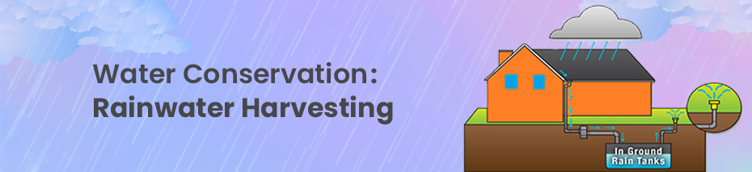

Rainwater harvesting is a fascinating and practical approach to water conservation that dates back to ancient civilizations. It's an essential technique for addressing water scarcity, reducing stormwater runoff, and fostering sustainable living. So, let's dive deeper into this subject.
What is Rainwater Harvesting?
Rainwater harvesting is a sustainable and environmentally friendly practice that involves collecting and storing rainwater runoff from rooftops, paved areas, or natural landscapes. This collected water can then be used for various purposes, such as irrigation, domestic use, and groundwater recharge.
Rainwater is the most natural form of fresh water and has been sustaining life on Earth for eons. It starts its journey as vapor in the atmosphere, which condenses into droplets and falls to the ground as rain. This process is a critical part of the Earth's water cycle, replenishing our planet's fresh water reserves.
This ancient practice is seeing a resurgence. By capturing and storing rainwater, we can use it for irrigation, household purposes, and even drinking after proper treatment. It's a sustainable way to manage water resources, reduce dependency on municipal supplies, and mitigate the effects of droughts and water scarcity.
Rooftop Rainwater Harvesting: One of the most common methods, where rainwater is collected from rooftops and directed into storage tanks or cisterns through gutters and downspouts. This method is widely used in both urban and rural areas.
Surface Runoff Harvesting: Involves collecting rainwater that flows over land surfaces. This water is channeled into storage systems or allowed to percolate into the ground, replenishing groundwater levels.
Recharge Pits and Trenches: Designed to facilitate groundwater recharge, these structures collect rainwater and allow it to seep into the ground, boosting the local aquifer.